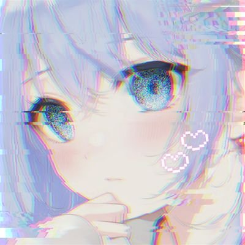

【HN】天見ライ (あまみらい)
【誕生日】3月9日
【血液型】o型
【趣味】歌うこととか好き！よくカラオケに行ったりしてる
【一言】こんななんもないサイトに来てくれてありがとう！(*￣3￣)╭
◆ CONTACT ◆
キリ番の報告や感想、メッセージは以下までお気軽にどうぞ★
Twitterはゲームとかの話もしてるからよかったらきてね( •̀ ω •́ )✧
★Twitter★ ★bulesky★